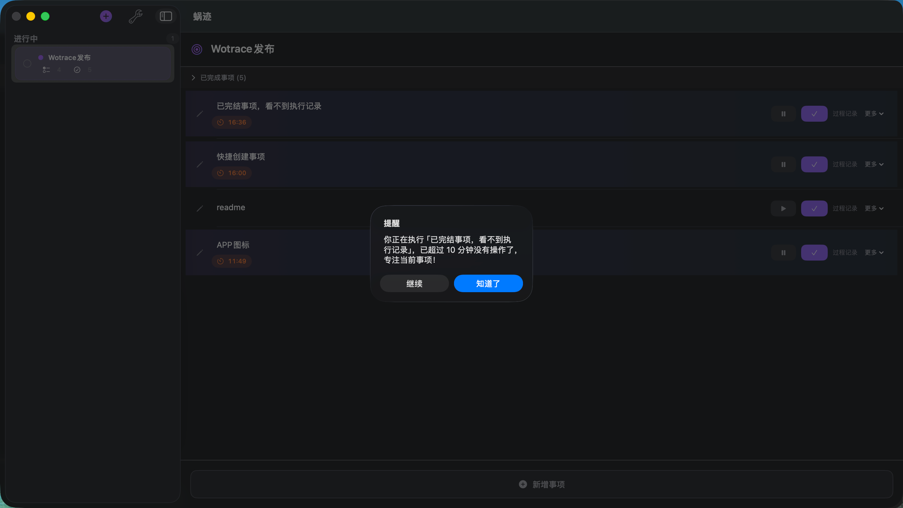

蜗迹
慢即是快，用思考和专注实现更高的效率
免费下载macOS 13.0+ · Apple Silicon & Intel

🎯 目标追踪
录入目标和你认为的关键步骤，支持动态添加，一路记录你的思考过程。
⏱️ 专注计时
实时追踪任务执行时间，暂停继续灵活切换，掌握每一分钟的流向。
🔔 智能提醒
15分钟无更新自动提醒，检查注意力是否被分散，及时拉回正轨。
慢即是快，用思考和专注实现更高的效率
免费下载macOS 13.0+ · Apple Silicon & Intel

录入目标和你认为的关键步骤，支持动态添加，一路记录你的思考过程。
实时追踪任务执行时间，暂停继续灵活切换，掌握每一分钟的流向。
15分钟无更新自动提醒，检查注意力是否被分散，及时拉回正轨。